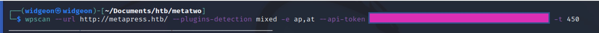

WPScan
WPScan comes pre-installed on Kali, but if you are using another distro you can download it here
Basic Facts:
- Used to enumerate WordPress usernames, plugins, vulnerabilities, themes, and brute force passwords.
- It can look for misconfigured files and test Web Application Firewalls.
Common Scans:
- To scan for themes: wpscan --url http://website.com --enumerate t
- To scan for plugins: wpscan --url http://website.com --enumerate p
- To scan for usernames: wpscan --url http://website.com --enumerate u
- To scan for vulnerabilities:wpscan --url http://website.com --enumerate vp
CTF Challenge Usage:
1. WPScan is only for websites made with WordPress.
• WPScans tend to take a long time so make sure the challenge you are doing is using WordPress before you start.
• Look for things like wp-content, wp-includes, wp-admin and wp-login.
• Look for any mention of WordPress on the website or nmap scan- "Made with WordPress"
• Use Wappalyzer or other browser extensions that tell you what websites are made with.
2. Basic Scan
The most basic WPScan is: wpscan --url http://<website.com> This scans the entire website for vulnerabilities and list plugins and themes.
3. Password Brute Forcing
If you find a username but no password, you can try brute forcing it with this command:
wpscan --url http://<website.com> --passwords --usernames
4. Api Tokens
Sometimes WPScan may require you to have an API Token. This could be because the website is behind a Web Application Firewall (WAF) and the token will allow the scan to bypass it.
To get an API Token you need to register for an account here. It is free but there are limited amount of times you can use the token.
To use your token in your command you use:
"wpscan --url http://<website.com> --api-token <Your Token Here>"
